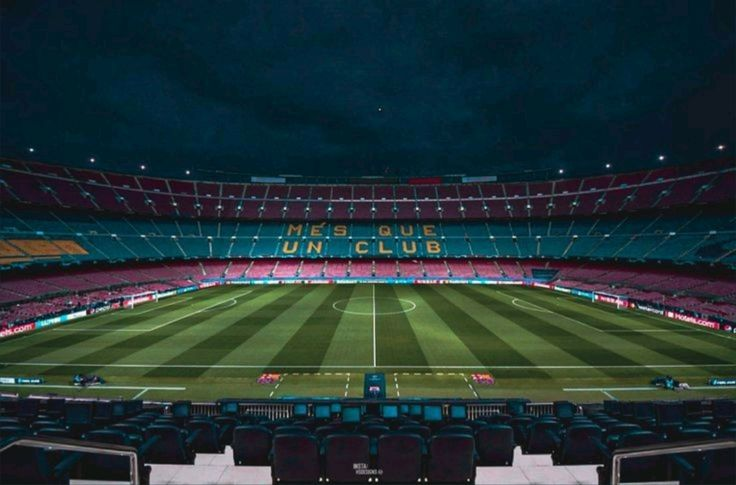
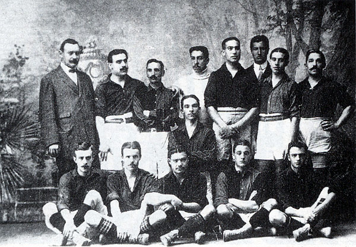
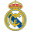
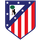

Spotify Camp Nou
A Spotify Camp Nou (katalánul) (magyarul: Spotify Új Mező), korábban Camp Nou, gyakran Nou Camp az FC Barcelona labdarúgócsapatának otthona Barcelonában, Katalóniában. A stadion 1957-ben készült el, az akkorra kicsinek bizonyuló Les Corts helyett, és Európa legtöbb néző befogadására alkalmas labdarúgó arénája lett.
Az 1998–99-es szezon során az UEFA "ötcsillagos stadion" minősítéssel ismerte el a Barça otthonának nagyszerűségét. Az épület hivatalos neve Estadi del Futbol Club Barcelona volt 2000-ig, amikor a tagok a névváltoztatásról rendezett szavazáson azt javasolták, hogy legyen az addigi becenév, a Camp Nou a hivatalos név.
Történelem

A Futbol Club Barcelona története a klub 1899-es alapításától napjainkig kezdődik. Az FC Barcelona, más néven Barcelona és közismert nevén Barça, Barcelonában, Katalóniában, Spanyolországban található. A klubot 1899-ben alapította egy svájci, katalán és német labdarúgó csoport, akiket Joan Gamper vezetett. A klub 1910-ig játszott amatőr labdarúgásokat különböző regionális versenyeken. 1910-ben a klub részt vett az első számos európai versenyen, és azóta tizennégy UEFA trófeát és egy nyolcas bajnokságot szerzett. 1928-ban a Barcelona társalapítója volt a La Ligának, a spanyol labdarúgás legmagasabb osztályának, egy sor más klubdal együtt. 2024-ig a Barcelona soha nem esett ki a La Ligából, ezt a rekordot osztják meg az Athletic Bilbaóval és az ősi riválisával, a Real Madriddal.
Barcelona története gyakran politikai jellegű volt. Bár külföldiek által létrehozott és vezetett klub volt, a Barcelona fokozatosan katalán értékekhez kötődő klubgá vált. Spanyolország 1925-ös autokráciára való átállása során Katalónia egyre ellenségesebbé vált a madridi központi kormánnyal szemben. Az ellenségeskedés erősítette Barcelona megítélését, mint a katalónizmus központját, és amikor Francisco Franco betiltotta a katalán nyelv használatát, Barcelona stadionja az egyik kevés hely volt, ahol az emberek kifejezhették elégedetlenségüket. A spanyol átmenet a demokráciába 1978-ban nem rontotta el a klub katalán büszkeségének megítélését. A 2000-es és 2010-es években – a klub sportsikereinek időszakában és a katalán játékosokra való nagyobb hangsúly – a klub vezetői nyíltan hűek voltak a klub történelmi elkötelezettségéhez az ország védelmé, a demokrácia, a szólásszabadság és a döntéshozatal joga iránt, és elítélik azokat a lépéseket, amelyek akadályozhatják e jogok teljes körű gyakorlását.
Tabella
| Helyezés | Csapat | Pont | GK |
|---|---|---|---|
| 1 |  FC Barcelona FC Barcelona |
67 | 46 |
| 2 |  Real Madrid |
63 | 33 |
| 3 |  Atlético Madrid |
54 | 21 |
2025–26-os FC Barcelona szezon
A 2025–26-os Futbol Club Barcelona szezonja a klub 127. fennállása és 95. egymást követő szezonja a legmagasabb osztályban. A hazai bajnokságon kívül a Barcelona idén is részt vesz a Copa del Rey, a Supercopa de España és az UEFA Bajnokok Ligája (amely már 22. egymást követő szezonban indul). A szezon 2025. július 1-től 2026. június 30-ig terjedő időszakot fed le.
A Barcelona 2025. augusztus 10-én tervezte visszatérni történelmi stadionjába, a Camp Nou-ba, miután két teljes szezonnyi szünet alatt felújították és bővítették a stadiont. Azonban nem sikerült időben megszerezniük a lakhatási engedélyt az eredeti visszatérési dátumra, a bemutatkozó mérkőzés végül 2025. november 22-én zajlott.